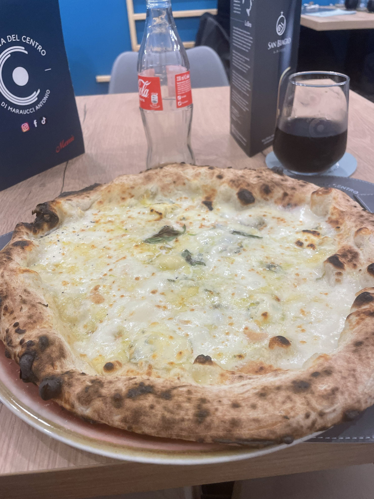

Napels is een stad die zichzelf ziet als uniek in de wereld — en zelfs uniek binnen Italië. En eerlijk gezegd: dat voel je meteen wanneer je er aankomt. De stad is rauw, levendig, chaotisch en tegelijkertijd warm en vol karakter.
Overal hoor je getoeter, zie je scooters langs je heen schieten en hangt er wasgoed boven de smalle straatjes. Het is een stad die leeft.

Op de avond dat ik in Napels aankwam, won SSC Napoli de landstitel. Dat maakte mijn eerste avond meteen onvergetelijk. De hele stad kleurde blauw, de kleur van de club.
Vlaggen hingen uit de ramen, vuurwerk knalde door de straten en overal stonden mensen te zingen en te juichen. Toen het laatste fluitsignaal klonk, barstte het feest los.

De volgende dag stond er een totaal andere ervaring op het programma: een bezoek aan Pompeji. Deze stad werd in het jaar 79 na Christus bedolven onder as en puimsteen na de uitbarsting van de Vesuvius.
Het contrast met het levendige Napels kon bijna niet groter zijn. Waar Napels bruist van energie, hangt in Pompeji een stille, indrukwekkende rust.

Terug in Napels merkte ik opnieuw hoe bijzonder de stad is. Het is misschien niet de meest nette of georganiseerde stad van Italië, maar juist dat ongepolijste maakt het zo echt.
En dan natuurlijk de pizza: een zachte, luchtige rand en een dunne, soepele bodem. Simpel belegd, maar perfect in balans. Napels is geen stad die je alleen bezoekt je beleeft haar.
